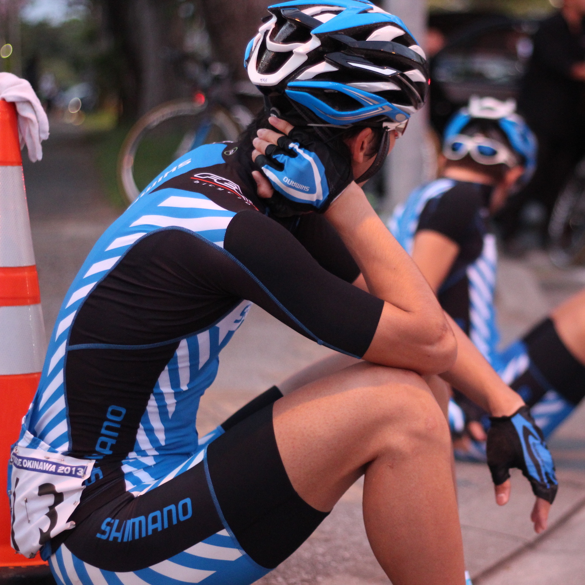

Masahiko Yasui

Doctor course student @University of Tokyo and researcher @Hitachi, Ltd.
ex-ProRoadRacer.[
ProCyclingStats]
Awards
2016 Dean's Award, Graduate School of Information Science and Technology, The University of Tokyo
2015 Young Author Award, the Society of Instrument and Control Engineers
2015.12 SI2015 Best Presentation Award
2014.12 SI2014 Best Presentation Award
2014.10 Best Student Paper Award, 2014 Int. Conf. on Advanced Computer Science and Information Systems
(Co-author)
2013.11 TOUR DE OKINAWA UCI1.2(Champion road race 210km) "King of Mountain"
Publications
Papers
- Masahiko Yasui, Yoshihiro Watanabe, and Masatoshi Ishikawa:
Occlusion-robust Sensing Method by Using the Light-field of a 3D Display System toward Interaction with a 3D Image,
Appl. Opt., Vol.58, Issue 5, pp.A209-A277 (2019)
- 安井雅彦，M. Sakti Alvissalim，山本裕紹，石川正俊:
空中映像と高速3Dジェスチャー認識技術の統合による低遅延な立体映像作業環境の実現，
計測自動制御学会論文集，Vol.52, No.3, pp.134-140 (2016)
- 安井雅彦，アルバロ カシネリ，奥村光平，奥寛雅，石川正俊:
残像による動体軌跡上情報投影手法の提案とその実現にむけた残像特性の基礎的研究，
日本バーチャルリアリティ学会論文誌, Vol.20, No. 1, pp.55-64 (2015)
Conference
- Masahiko Yasui, Yoshihiro Watanabe, and Masatoshi Ishikawa:
Projection-type integral 3D display using mirrors facing each other for a wide viewing angle with a downsized system,
SPIE Photonics West OPTO, Conf. on Advances in Display Technologies X (San Francisco, 2020.2.5)
- Masahiko Yasui, Yoshihiro Watanabe, and Masatoshi Ishikawa:
Occlusion-Robust 3D Sensing Using Aerial Imaging,
IEEE International Conference on Computational Photography (ICCP 2016) (Evanston, 2016.5.15)/Proceedings, pp.170-179 (2016)
- Hirotsugu Yamamoto, Masahiko Yasui, M. Sakti Alvissalim, Masashi Takahashi, Yuka Tomiyama, Shiro Suyama, and Masatoshi Ishikawa:
Floating display screen formed by AIRR (Aerial imaging by retro-reflection) for interaction in 3D space,
2014 IEEE International Conference on 3D Imaging (IC3D 2014) (Liège, Belgium, 2014.12.9)／Proceedings, Paper40, pp.1-5
- Muhammad Sakti Alvissalim, Masahiko Yasui, Chihiro Watanabe, and Masatoshi Ishikawa:
Immersive Virtual 3D Environment based on 499 fps Hand Gesture Interface,
2014 International Conference on Advanced Computer Science and Information Systems (Jakarta, 2014.10.18)／Proceedings, pp.198-203